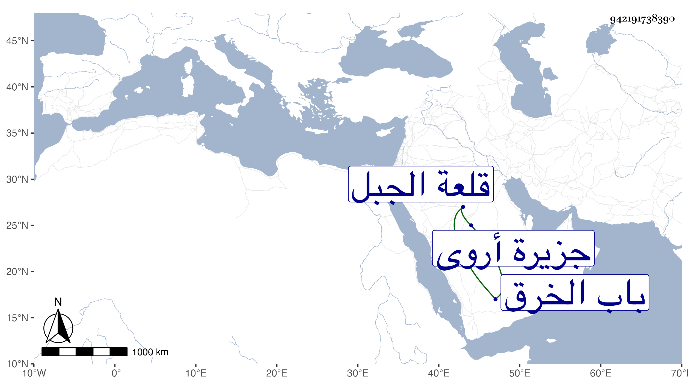

0902Sakhawi.DawLamic.ITO20230111-ara1.EIS1600.942191738390
Biography ID: 942191738390
470
محمد بن علي بن شعبان بن الناصر حسن بن الناصر محمد بن المنصور قلاوون ناصر الدين ابن الاسياد بالتحتانية ويقال لاميه أمير على ولهذا محمد بن السلطان حسن ولد بعد القرن بسنين في قلعة الجبل ونشأ بها تحت كنف أبيه إلى أن رسم الأشرف برسباي في حدود سنة خمس وعشرين لبني الأسياد بالنزول منها فسكن هو وأخوه أبو بكر مع والدهما بمدرسة جدهم الحسنية وضاق حالهم لمزيد كلفتهم بالنسبة لسكنى القلعة فاحتاج صاحب الترجمة لتعاطي الغناء والطرب لكونه كان يدري طرفا من الموسيقى مع طراوة صوته فمشى حاله بذلك قليلا ، وصحب خشقدم الرومي الزمام ولازمه بحيث حج معه مع تجرع الفاقة سيما بعد موته فلما تسلطن الظاهر جقمق كان ممن يدخل عليه ويلازمه في رمي النشاب لمشاركته فيه وغيره فحظي عنده وصار من خواصه وندمائه بحيث عد في الأعيان وتكلم في الدولة وقصد في الحوائج فانتعش وكثر حشمه وخدمه وابتنى بيتا بقرب قنطرة باب الخرق وآخر بموردة الجبس على الخليج تجاه جزيرة أروى وحج في سنة إحدى وخمسين وعاد وقد نقص عما كان فيه فلم يلبث أن مرض ولزم الفراش أشهرا ثم مات في سابع جمادى الآخرة سنة اثنتين وخمسين في حياة أبويه ونزل السلطان فصلي عليه . وكان كثير الأدب بشوشا عاقلا محتملا حسن الأخلاق مع إلمامه بالموسيقى والرمي . وهو في آخر عمره أحسن حالا منه قبله مع حرصه على الدنيا ورغبته في جمعها من أي وجه ومزيد إمساكه عفا الله عنه .
